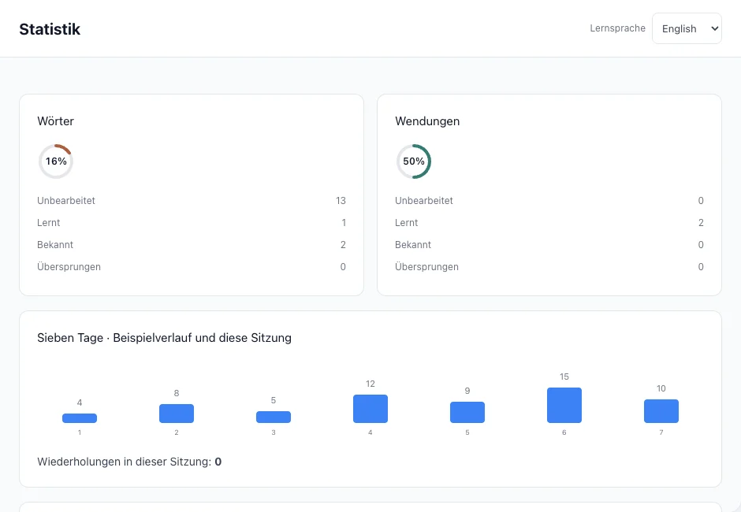
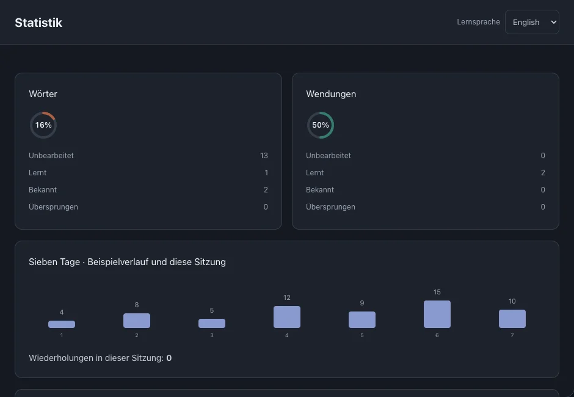

Statistik
Nutze Lernstatus, Wiederholungsverlauf und Dateifortschritt für deine nächste Lerneinheit. Die Werte beschreiben Aktivität, keine Sprachkompetenz.
Auf dieser Seite
Status von Wörtern und Wendungen
Die Zahlen unterscheiden unbearbeitete, lernende, bekannte und übersprungene Einträge. Wörter und Wendungen werden getrennt ausgewertet.



Letzte Wiederholungen
Das Sieben-Tage-Diagramm zeigt Wiederholungsaktivität. Es wird durch gespeicherte Bewertungen aktualisiert; die Anzahl entspricht nicht der Zahl beherrschter Wörter.
Lernfortschritt je Datei
Der Lernindex gewichtet bekannte und übersprungene Einträge vollständig, lernende zur Hälfte und unbearbeitete mit null.
- Öffne den Fortschrittseintrag einer Datei in der Statistik, um weiterzulesen.